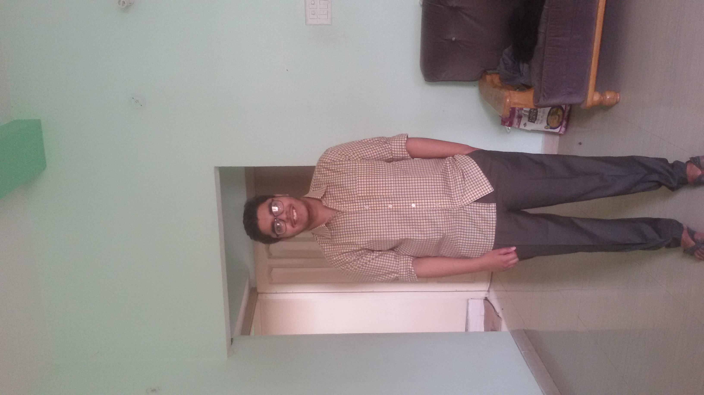

Saksham Shwetank

Objective
About to graduate in July 2024, multidisciplinary Engineer with excellent problem solving abilities and processthinking skill.Through my studies, I have gained extensive knowledge about JAVA, Data Structure, Algorithm
among many other components of computer science.Effective communicator, eager to put my extensive studies to
practical, applied use.
Education
Bachelor of Technology in Computer Science and Engineering 2020 - 2024
Galgotias College of Engineering and Technology, CGPA: 7.74/10
CBSE, Class XII 2019 - 2020
B.D Public School, Bangra, Percentage: 68/100
CBSE, Class X 2016 - 2017
Chapra Central School, Chapra , CGPA : 9.4/10
Skills
JAVA, Data Structure, OOPS, Algorithm, DBMS, HTML, CSS, JAVA SCRIPT, PYTHON
Projects
Instagram Clone
HTML, CSS, JAVA SCRIPT, REACT
· A project that allows user to interact with other individuals
· Users can put their thought on a platform so others can understands the user thought process easily
· React, java script
NFT Marketplace
HTML, CSS, JAVA SCRIPT, NODE JS, ...
· Platform where we can sell and buy our NFTs
· uses online wallet like ethereum.
Gov. Chain: Reinventing Government Operations with Blockchain Technology and Transparency
Html, CSS, Java Script, React, blockchain
Major Project, ONGOING
· It allows users to vote their thought online
· uses blockchain to prevent the voting process from false methods
INTERNSHIP/TRAININGS
Wipro TalentNext Training July 2023 - September 2023
Coding Ninjas, Java Data Structure and Algorithm
Extra-Cirrcular activities
Chess, Reading Manga, Cricket